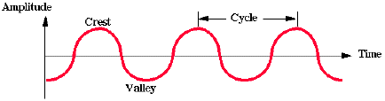
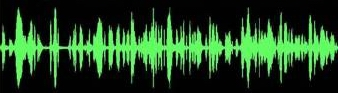
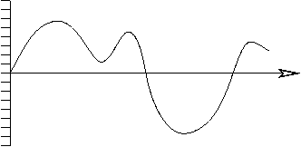
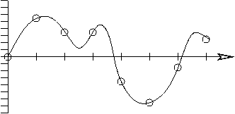
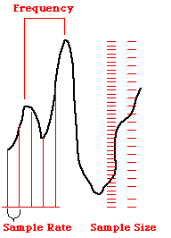
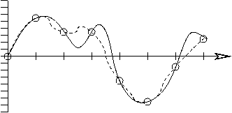
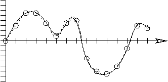
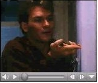

Sound is produced by the vibration of an object in air or liquid
Sound moves very fast through waves of pressure
(in air, 340 m/sec = 750 miles/hour)

The sound wave for a pure tone is characterized by its frequency (pitch) and amplitude (loudness)
Frequency is measured in Hz or cycles per second. Humans can hear frequencies between 20 Hz and 20,000 Hz (20 KHz). Amplitude is measured in deciBels.
Sound waves for a short music clip:

In an analog representation of sound, some physical property, such as voltage, varies continuously in frequency and amplitude:

An analog signal can be sampled to create a digital representation of sound:

In a digital representation, the signal is conveyed by a sequence of discrete
numbers:
0 5 3 3 -4 -6 -2 2 ...

Two important factors in the sampling process affect sound quality and the file size needed to store audio signals:
The choice of sampling rate and bit-resolution depend in part on the type of audio information being represented:
How frequently should we sample? The Nyquist Sampling Theorem says:
Sample twice as often as the highest frequency you want to capture
When converting from a digital representation back to analog (e.g. listening through a speaker), the quality of the reconstructed signal (dashed curves below) depends on the original sampling rate:
 
High sampling rate and bit-resolution yield high quality sound, but require large file sizes!
The bit-rate is the number of bits needed to store 1 second of audio:
bit rate (bits per second) = bit-resolution x sampling rate
file size (in bits) = bit rate x recording time
How many bits in 1 second of monophonic CD music?
How many bits in 1 second of stereo CD music?
How many bits in one hour of stereo CD music?
16 bits per sample x 44100 samples per second x 1 second = 705,600 bits
705,600 bits / 8 bits per byte = 88,200 bytes ≈ 88 KB
For stereo, add another 88 KB for the second channel for a total bit-rate of 176 KB/second!
For an hour of CD-quality stereo music
176 KB/sec x 3600 seconds/hour = 633,600 KB ≈ 634 MB
634 MB is about the size of a CD — it's not accidental that a CD can hold about 1 hour of music, it was designed that way!
Check out this comparison of a sound clip at various resolutions and sampling rates.
Will we need to have such large file sizes for sound clips on our web pages? No, thanks to audio compression techniques, used in file formats such as Quicktime, AVI, RealAudio and MP3.
Any time signals are transmitted, there will be some
degradation of quality:
1. signals may fade with time and distance
2. signals may get combined with interference from other
sources (static)
3. signals may be chopped up or lost
When we continue to transmit and transform signals, the
effect is compounded.
However, digital transmission and storage of information
allows the possibility for creating perfect (undegraded) copies
of the information, because we only need to distinguish 1's from 0's, and because errors
in transmission can be detected and corrected.
A movie is a sequence of images displayed at a fast pace
The size of a movie file is many times the size of a single image.
Suppose we have a 3-second movie that displays 15 frames per second, and
each image frame has a width of 160 pixels, height of 120 pixels, and bit-depth
of 2 (only 4 colors!)
Size of each image:
(160 x 120 pixels) x 2 bits/pixel = 38400 bits ≈ 4.8 KB
Total file size: 4.8 KB/frame x 15 frames/sec x 3 sec = 216 KB
And this does not include any sound! Fortunately movie files can be compressed! The bouncing ball movie is only 103KB in the Quicktime movie format.
Sound and movies can be added to web pages using the <embed> tag:

<embed src = "ghost.mov" PluginsPage = "http://www.apple.com/quicktime/download/" width = "160" height = "136" controller = "true" loop = "false" autoplay = "false"> </embed>
Some attributes for the <embed> tag:
PluginsPage directs the browser to visit a website containing the
appropriate plug-in to handle Quicktime movies
height and width control the size of the movie window
that appears on the page (16 of the 136 pixels are occupied by the controller, so
the real movie is 160 by 120 pixels)
controller is true or false, and controls
the visibility of the controller bar below the movie window (without the controller
bar, you can double-click and click on the window to start and stop the movie)
loop is true or false, and controls whether
the movie restarts from the beginning after it plays
autoplay is true or false, and controls
whether the movie starts playing as soon as a sufficient portion has been loaded
Display a YouTube video:
<embed src = "http://www.youtube.com/v/v7Nmpp94buo"
type = "application/x-shockwave-flash"
width = "255"
height = "210">
</embed>
Use the <embed> tag to add sound:
<embed src = "friends.mov"
PluginsPage = "http://quicktime.apple.com"
height = "16"
width = "200"
controller = "true"
loop = "false"
autoplay = "false">
</embed>
Remember Mission Impossible?
<embed src = "mission.mp3"
PluginsPage = "http://quicktime.apple.com"
height = "16"
width = "200"
controller = "true"
loop = "false"
autoplay = "false">
</embed>